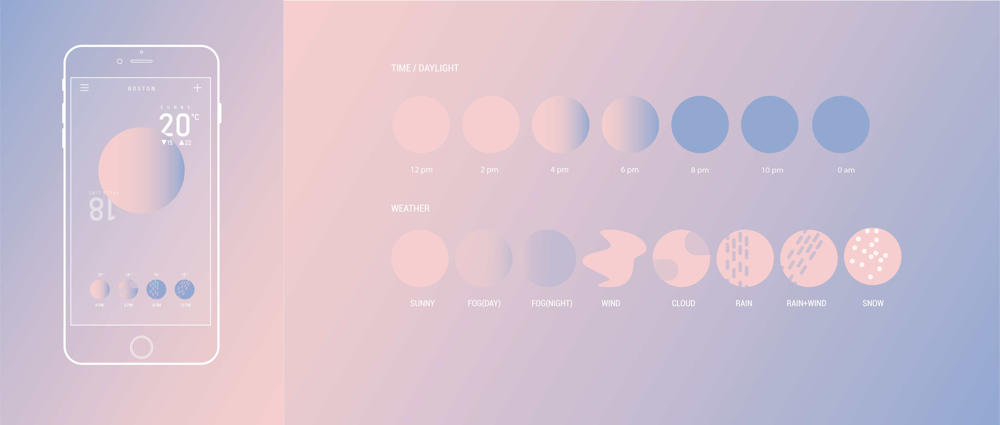
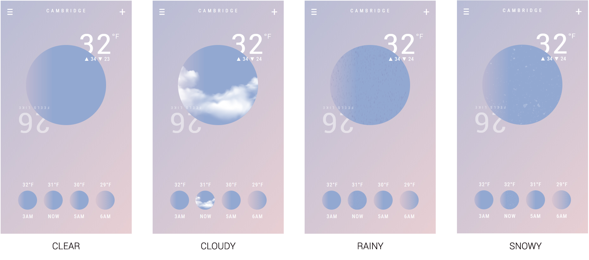
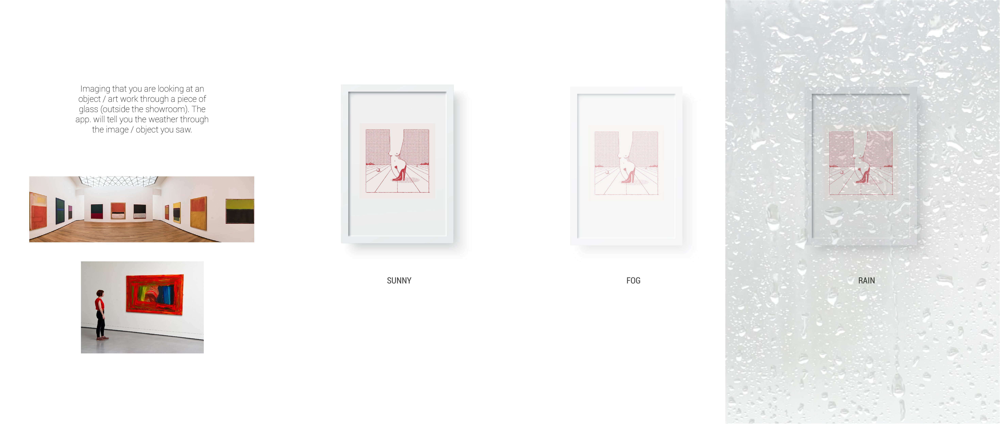

Project 2:
Weather App
4.033 Design Studio: Information and Visualization, Spring 2018
- Jiani Zeng
Hand Sketches

My initial sketches started from two questions: 1) What is weather? 2) What user want to know about weather? Based on these two questions, I quickly sketched some ideas. The first idea is to show the back view of a human profile. The layers of the cloths are determined by the temperature, to show the user what to wear today. There will be another graphic layer/filter of the actual weather: for example, if it’s snowing, there will some white dots on the shoulder. The second concept uses a similar representation, but with human’s body hair. The next two concepts (selected for future development) will be explained in the following section.
Refined Concept 1
 The circle in the middle of the canvas is both the “sun” and an “object”. The “sun” represents lighting condition – from light to dark. The user can check on the hourly weather by sliding on/rotating the “sun” (so the color and pattern of the sun will change). As an “object”, the shape of the circle is dynamic and changing based on the weather variables: for example, for windy condition, the circle will be an irregular shape based on the wind strength; if it is rainy, there will be another layer of animated rain on top of the circle (subtract the circle). Since the circle does not merely mean the “sun”, I used unconventional color – pink for the sunlight and purple for the night (still close to the lighting). This design gets rid of the traditional weather icon. I designed a weather icon library based on the variables: so if it is windy and rainy, the weather layer will be rain drops (lines) in a certain angle (defined by the wind speed and direction).
Refined Concept 2
The second concept is customizable and can be integrated with lock screen. Basically, the interface is a view of looking at an art work through a piece of glass. The user can tell the weather through what they see in the glass. The whole interface responses to time: it looks darker at night. Ideally, the user can customize any picture/artwork behind the glass, or their own photos, or a picture of an object they like.
First Dashboard
Cambridge
00
°F
Noticed that the first dashboard is a real-time working prototype. The “time” layer changes its color according to the time. The weather layer (clear, rainy, cloudy etc.) will change according to the real weather data. (You can see the animation icon when it is actually rainy).
Second Dashboard
All the data used in the second dashboard is real-time too. But I chose “rainy” condition to illustrate this concept. The actual working model will use the same method to choose weather filter layer as in the first dashboard. The whole interface becomes darker as time goes by – since it’s using very similar code to the first one, I didn’t code this part for this concept.